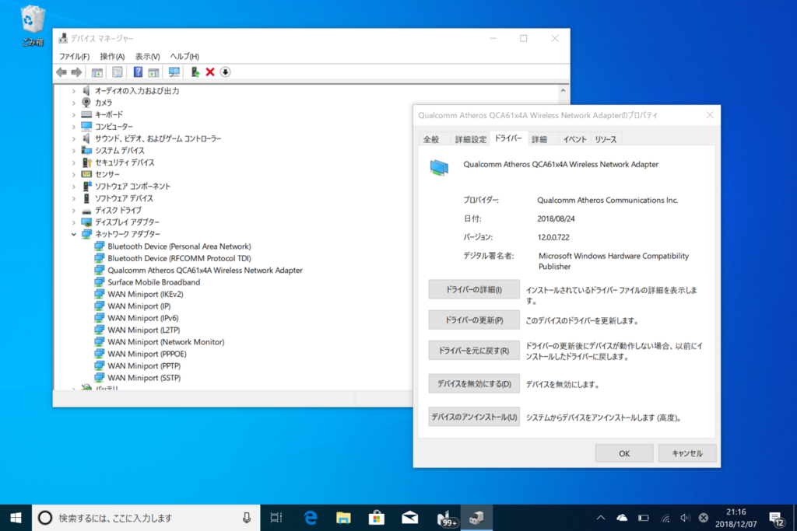
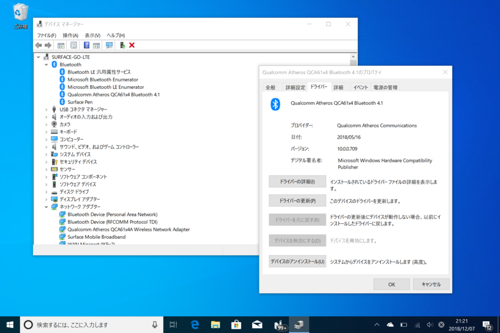

Surface Go LTE で Wi-Fi がとぎれる現象のトラブルシューティング
公開日：
現象
Wi-Fi が途切れる。スリープから解除したときに発生することが多いように感じるが、普通に使っていてもときどき発生する。
参考
So Ive tried various suggestions and the only thing that has seemed to work so far has been assign a static IP to the Surface GO...Ill report back if anything changes.
これはまだ試していないが、いろいろやってダメなら試してみる。
Microsoft の公式フォーラム。

Wireless Network 12.0.0.722

Bluetooth 10.0.0.709
Surface Broadband 10.0.17134.1
トラブルシューティング
OS のクリーンアップ
前回のついで。
今のところ問題はなさそうだが、少し様子を見る。
LTE の設定は問題の解消を確認するまでやらない。スリープ・復帰、再起動などを試してみたが問題がなさそうなので、APN の設定（IIJmio）をしてモバイルネットワークも有効化した。これで少し様子を見る。
→ Surface Go は接続できるようになったが、ほかの端末がルーター（au ひかり貸し出しの Aterm BL900HW）に接続できなくなった
→ Surface Go のみ Wi-Fi の調子が悪い（バッテリー駆動時のみ？）